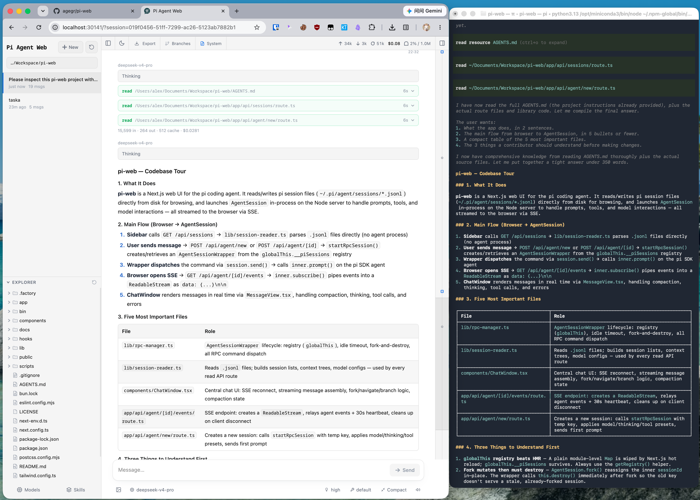
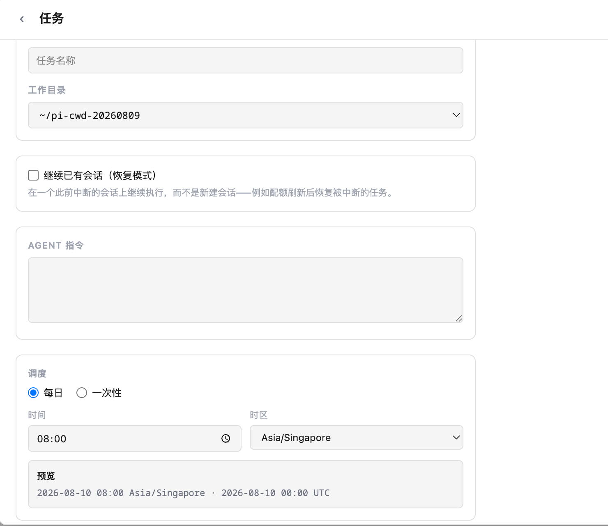
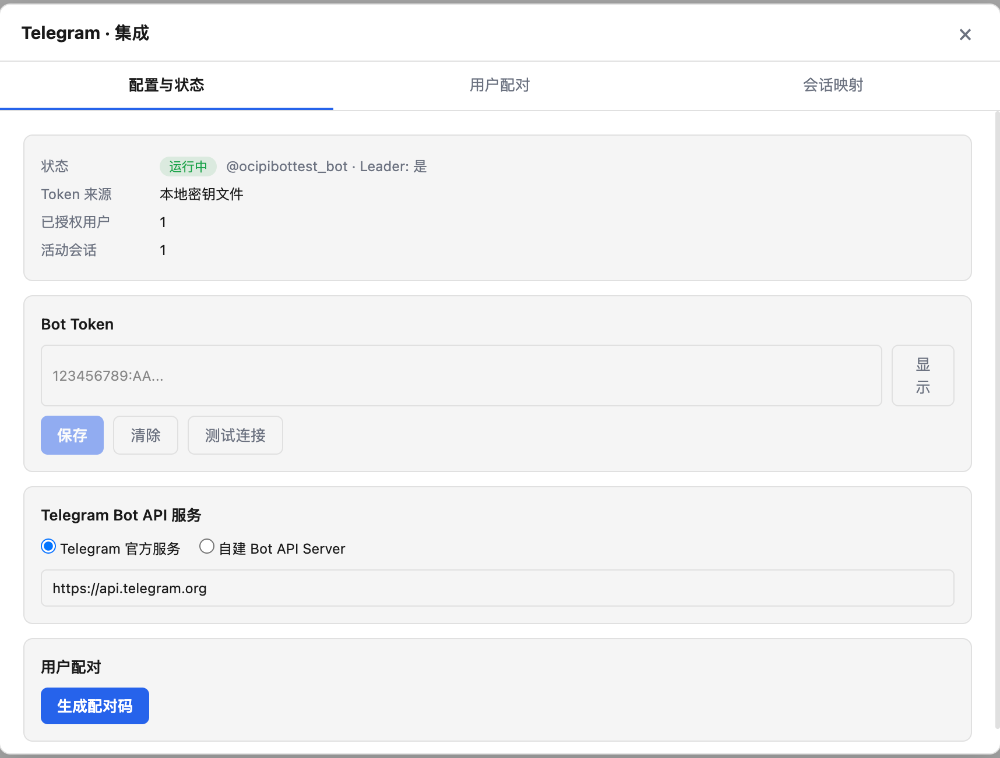

Why Pi Hub
在 pi-web 基础上，构建连续的 AI 编程工作流
Pi Hub 延续 pi-web 的核心方向，并围绕本地优先、数据可控与个人开发自动化持续扩展能力。
- 浏览、搜索、继续和 Fork 历史会话
- 实时对话，查看思考、工具调用与执行结果
- 预览代码、Markdown、图片、音频与 PDF 文件
- Git worktree 管理与多分支开发
- 模型、API Key、OAuth 与 Skills 配置
- 定时任务调度与已有会话续接
- Telegram 会话操作与任务完成通知
- 支持中英文等多语言界面
Product tour
从会话到自动化



为实时交互与可持续运行而设计
使用 Next.js 16、React 19 与 TypeScript 构建 Web 界面，以 SSE 支撑 Agent 事件流，并结合 grammY、Markdown、Mermaid 与 KaTeX 扩展工作台能力。
Next.js 16React 19TypeScriptTailwind CSSPi Coding Agent SDKSSEgrammYMarkdown / Mermaid / KaTeX